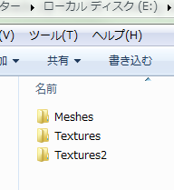
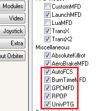
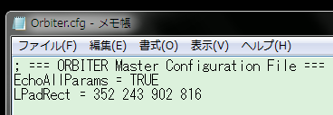
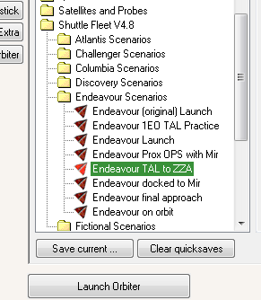
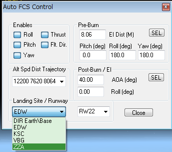

Shuttle Fleet v4.8とAutoFCSのインストール
Shuttle FleetはOrbiter2010でスペースシャトルを飛ばすためのMODです。
自動着陸を可能にするAutoFCSなど、様々な機能が追加されています。
初心者からマニアまで、スペースシャトルを飛ばしてみたい方におすすめです。
ダウンロード
Space Orbiter > Page 2
上のリンクから、Space Shuttle Fleet V4.8 Release 2をダウンロード。
Space Orbiter > Orbiter Addons > Page 1
STS Payloads Expansion Pack for Fleet V4.8をダウンロード。
（実際にダウンロードされるファイルの名前はSTSPayloads2010R0です）
STS PAYLOADS v.2.01
STS PAYLOADS v.2.01をダウンロード。
重要：2018年3月13日現在、STS PAYLOADSは公開停止になっています。
MODの公開が再開されるまで、STS PAYLOADSのダウンロード・インストールは飛ばしてください。
このMODを導入しなくても、ISS v3.2などのMODについては影響ありません。
インストール
注意：必ず以下の順番(Shuttle Fleet→STS Payloads→Expansion pack)でインストールしてください。
Space Shuttle Fleet V4.8を解凍して、中身をOrbiterのインストールフォルダに上書き。
STS PAYLOADS v.2.01を解凍する。
重要：中に入っているMeshes Textures Textures2以外のフォルダをすべてファイルごと削除する。
これら3つのフォルダだけをOrbiterのインストールフォルダに上書き。

最後に、STSPayloads2010R0(Expansion pack)を解凍して、中身をOrbiterのインストールフォルダに上書き。
ゲームを起動して、Modulesタブを開く。
- AutoFCS
- GPCMFD
- RPOP
- UnivPTG
以上の4つにチェックを入れる。

グラフィック強化MOD
高解像度テクスチャMODを利用する場合は、以下の記事を参照してください。
Shuttle Fleet v4.8 グラフィックMODのまとめ
AutoFCSを有効にする
シャトルの自動着陸を可能にするAutoFCSを使用するためには、以下の手順を踏む必要があります。
Orbiterのインストールフォルダにある、以下のふたつのcfgファイルをメモ帳で開く。
- Orbiter.cfg
- Orbiter_NG.cfg
EchoAllParams = FALSEをEchoAllParams = TRUEに書き換えて上書き保存する。

重要：最低でも1回はゲームを起動しないとcfgファイルが作成されません。
ファイルが見つからない場合は、Orbiter.exeおよびOrbiter_ng.exeをダブルクリック。
一度ゲームを起動させてください。（Launchpadを開くだけでよい）
AutoFCSを実行する
Orbiter.exe（Orbiter_ng.exeではなく）をダブルクリックしてOrbiterを起動する。
重要：必ず最初はOrbiter.exe(Orbiter_ng.exeは不可)でAutoFCSを実行してください。
2回目からはOrbiter_ng.exe+D3D9ClientでもAutoFCSが使えるようになります。
ModulesタブでAutoFCSにチェックが入っていることを確認する。
Shuttle Fleet V4.8/Endeavour Scenarios/Endeavour TAL to ZZAのシナリオでゲームを開始。

ゲーム内でCtrlキーとF4キーを同時押しして、リストからAutoFCSを選択。
OKをクリック。
左下のドロップダウンメニューでZZAを選択。

Ctrl+Gを押して、ランディングギアを待機状態にしておく。
自動着陸が成功すればインストールは完了です。
D3D9Clientを使用する場合は、Orbiter_ng.exeで同じ手順を繰り返してください。
Shuttle Fleetの基本操作については、以下のページを参照してください。
Shuttle Fleetの記事一覧